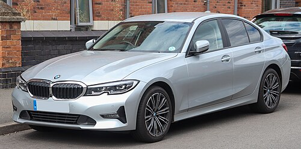
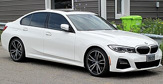
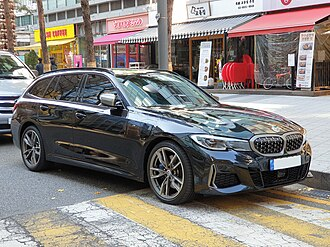

The seventh generation of the BMW 3 Series range consists of the BMW G20 (sedan version) and BMW G21 (wagon version, marketed as 'Touring') compact executive cars. The G20/G21 has been in production since mid-October 2018 with a facelift in July 2022 and is often collectively referred to as the G20.
The M340i, one of the first models in the range, became available for sale in the spring of 2019, with the 330e plug-in hybrid model scheduled for launch in 2020. The 3 Series Gran Turismo fastback body style was discontinued for the G20 generation.
At the end of November 2015 , a final design proposal for the successor of the F30 3 Series by Alexey Kezha out of 3 total, was chosen by BMW management, as reported by Auto Bild in October 2015. The new 3 Series, internally called the G20, was unveiled at the 2018 Paris Motor Show on October 2, 2018, and was available for sale in March 2019 . In 2023, tests by the Graz University of Technology found that the plug-in hybrid version of the car (along with several other pug-in hybrids) emits more than three times as much carbon dioxide per kilometre as the results from the manadated government laboratory test procedures indicate, with 112 grammes released per kilometre travelled in the universities on-road test as opposed to the official claim of 36 grammes released per kilometres travelled.
